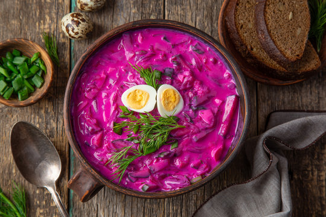

Home
Šaltibarščiai (Cold Beet Soup)

Description
Šaltibarščiai is a traditional Lithuanian cold soup made with vibrant pink beetroot, kefir, cucumbers, dill, and green onions.
It's refreshingly tangy, creamy, and typically served chilled with a side of boiled potatoes. Perfect for hot summer days, this soup is both healthy and packed with flavor.
ingredients
- boiled potatoes
- beetroot
- cucumbers
- spring onions
- hard boiled eggs
- kefir
- fresh dill
Steps
- chop potatoes into bite-sized pieces
- cut beetroot into lengths
- chop spring onions
- cut dill
- transfer everything but the potatoes into a large bowl
- pour over the kefir and give it a good mix
- season with salt
- sprinkle with remaining dill
- serve with potatoes and enjoy!